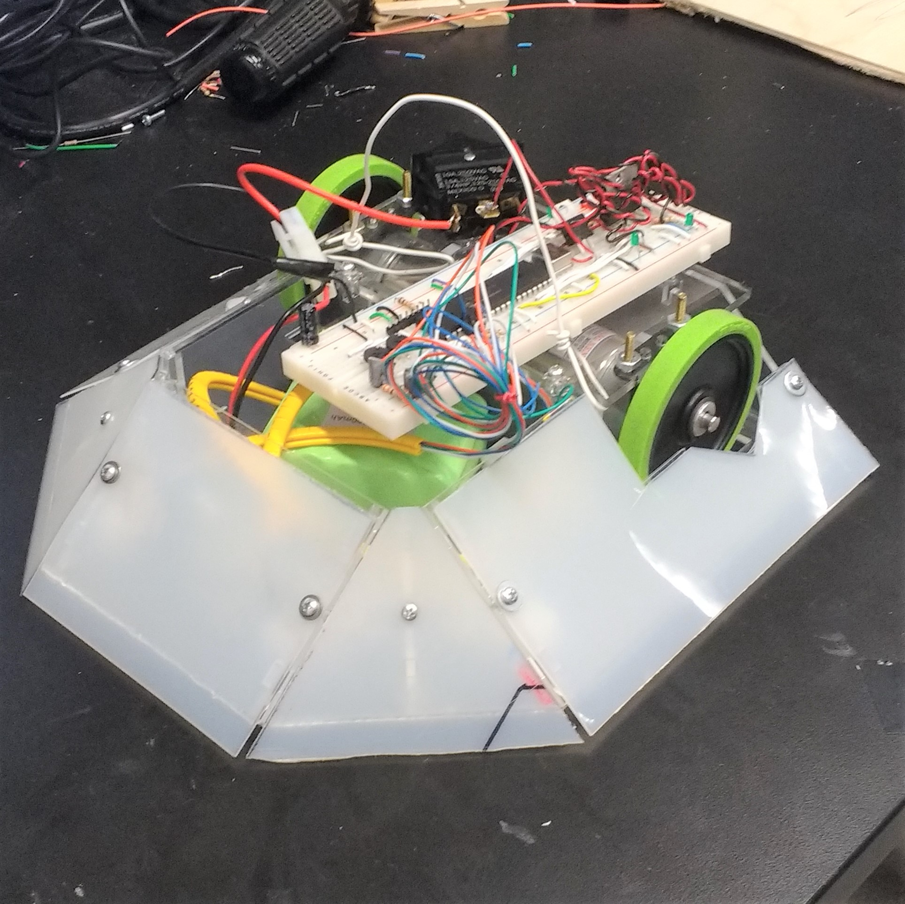

Sumo Robot: Brute Lee
Sumo is a full-contact sport where a wrestler has to push an opposing wrestler out of the circular ring that they are in. This concept is implemented into engineering by having robots function under similar conditions. The purpose of the designed robot is to push opposing robots out of a sumo ring made from black neoprene rubber mat outlined by white tape. The designed robot has to be autonomous and cannot sabotage the opponent.

The "Brute Lee" Robot designed by a team of three, Hou Chong Chan, Liushifeng Chen, and William Lim, is designed to keep in close contact with the ground. Shaped like a pentagon, three sides of the robot are ramped and covered with thin nylon sheets to prevent opposing robots from lifting the robot. The robot uses 12 V 152 rpm brushless motors to rapidly navigate around the ring and push opposing robots from behind. Electronic components of the robot consist of the PIC18F4520 microcontroller, IR sensors, motor drivers, and other standard components. Brute Lee won the annual Sumo Robot Competition of 2017.
Micro Suction Climbing Robot
Under a team of researchers in Tennessee Tech University, we were able to develop the first climbing robot utilizing tank treads. Microsuction adhesive applied to the base of these treads. The robot uses the suspension system located above the road wheel to pull up the treads along certain points, which generates an adhesive suction force attaching the robot to its vertical surface.
 Configuration 8
Configuration 8
Autonomous Robot
Working Process.
Design and Prototyping
Engineering students at Cooper Union cursed and blessed for their academically rigid environment. In a group of four, Garo Bedonian, Alecsey Kovalenko, Dachi Tan, and I worked together to create an arcade machine that would allow students in Cooper Union to relief their stresses.
A YouTube video of our final project can be found
here
Our weekly updates and final furbished project can be found
here